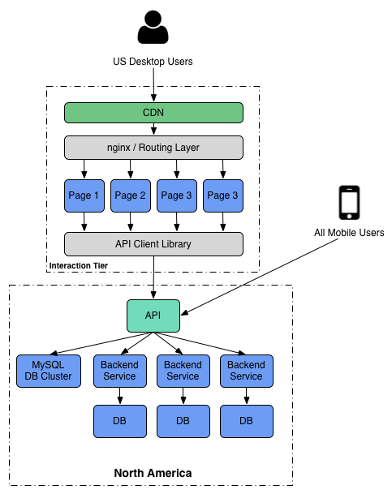
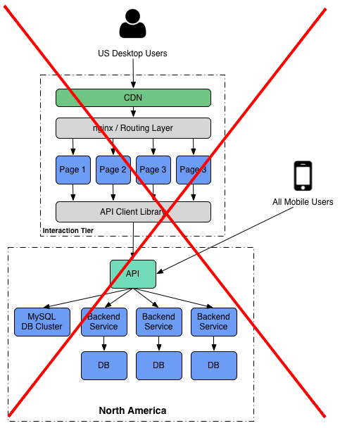
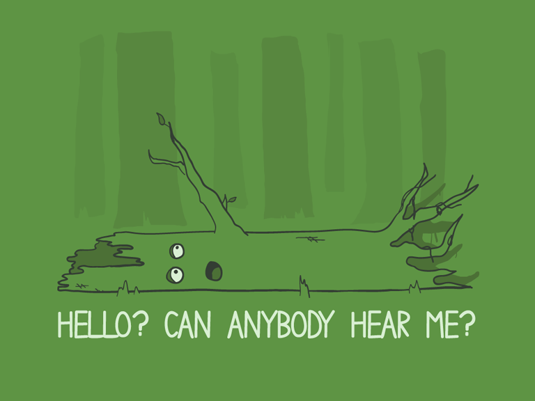
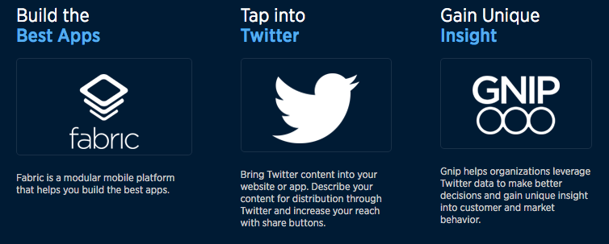
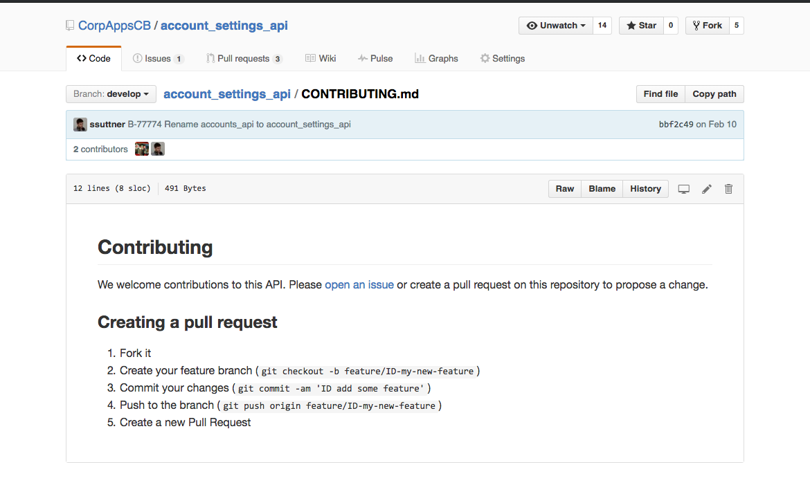
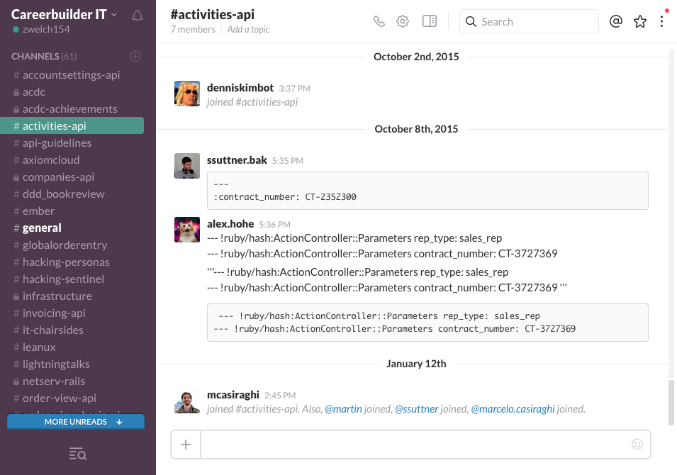
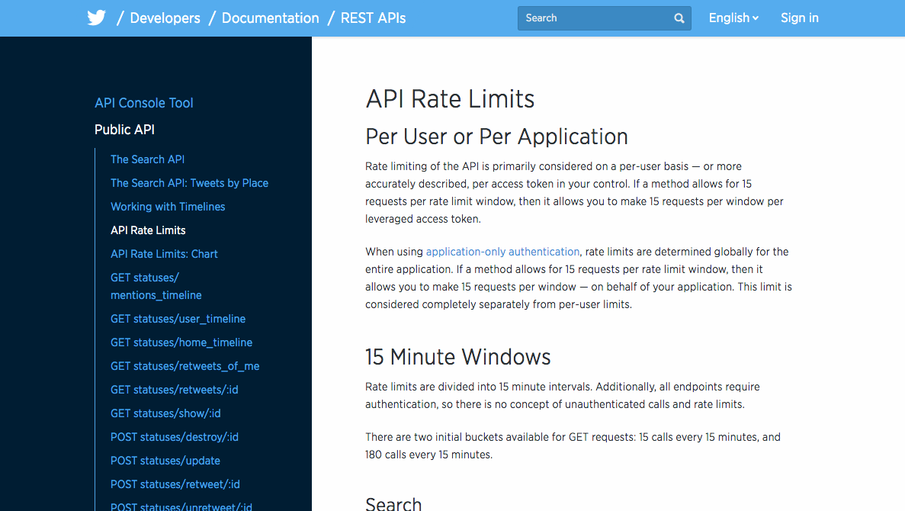
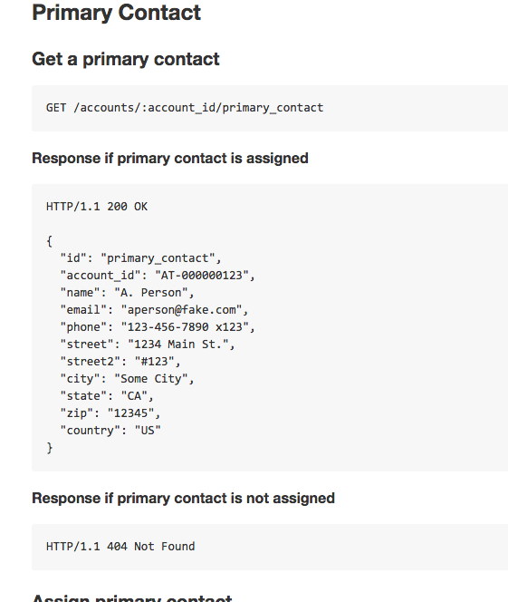

Driving Adoption
7 Levels
Level 1
Product
Differentiate Your API

What about authentication?
-
endpoint without authentication
-
sample partner with restricted access
Access to You!


Level 3
Business terms
Be Up-Front

Documentation is a competitive advantage

Augment with videos or slideshares
Don't wait for developers to come to you
-
TOI
-
Blog
-
Slack @channel
-
Lightning Talks!
Level 6
Developer Experience
Think UX First!
The processes that surround your API are just as much a part of the product as the API itself
Driving Adoption
- Product
- Access
- Business Terms
- Content
- Awareness
- Experience
- Community